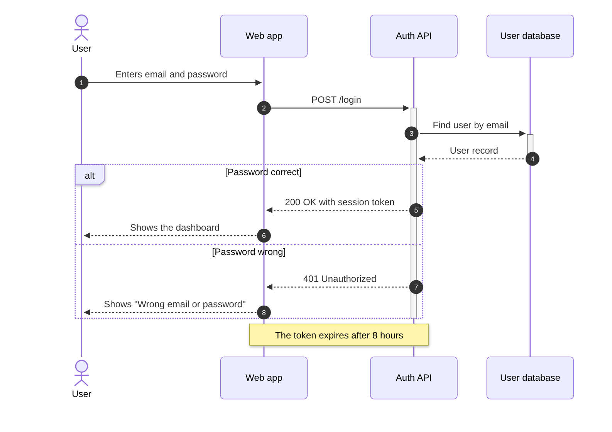

Guide · Confluence Cloud
Sequence diagram in Confluence Cloud (free, with Mermaid)
Confluence Cloud does not draw Mermaid on its own. Paste a Mermaid sequenceDiagram block into a page and it stays a code block: readers see the messages as text, not as a diagram. A Mermaid app draws it. With Mermaid Editor for Confluence, a free app on the Atlassian Marketplace, you type or paste the messages and the sequence diagram draws next to them while you type. Below: the steps, an API login flow to copy, how the syntax works, and the errors people run into most.
What Confluence Cloud does with Mermaid on its own
Confluence Cloud does not draw Mermaid itself. In our tests in October and November 2026, a ```mermaid block pasted into a page became an ordinary code block: readers see the messages as text, not the diagram. The code is kept safely, but nothing is drawn.
To see the diagram you need a Mermaid app that adds a macro to the editor, or you draw the diagram elsewhere and upload a picture. How to add Mermaid diagrams to Confluence Cloud compares those routes.
How to add a sequence diagram with Mermaid Editor for Confluence
Full disclosure: Dortus makes this app. The steps:
- A Confluence admin installs Mermaid Editor for Confluence from the Atlassian Marketplace. The app is free.
- Open the page in edit mode. Type
/mermaidand choose Mermaid Editor. You can also open the + insert menu in the toolbar and search for Mermaid Editor. - The editor opens with the code on the left and a live preview on the right. Click the Sequence example to start from a short support escalation, or paste the example from this page. If you paste a block that starts with
```mermaid, the fences are removed for you. - Change the text. The preview redraws as you type. If a line is wrong, the preview says what is wrong and names the line, and that line is marked in the code.
- Click Insert diagram, or press Ctrl+Enter (Cmd+Enter on a Mac). Publish the page.
- To change it later, select the diagram in the editor and click the pencil icon. Versions in the editor brings back any of the last 20 saves.
On the page the diagram fits the width of the page. Hover over it, or tab to it, for the zoom buttons. Click it, or use Open large, to see it in a big window. SVG and PNG download the diagram for a slide or an email. In Confluence’s dark mode the diagram is drawn in Mermaid’s dark colours. The app has 12 examples to start from: flowchart, sequence, class, state, Gantt, pie, mindmap, timeline, journey, ER, architecture and kanban.
Where it lives: the app runs on Atlassian Forge. The Mermaid code is saved in the macro on the page, earlier versions in Forge storage in your own Atlassian site, and the diagram is drawn in the browser of the person reading the page.
Example: an API login
A user logs in through a web app. The web app asks an auth API, the auth API looks the user up, and the answer depends on the password. Copy it and change the names to your own services.
sequenceDiagram
autonumber
actor User
participant Web as Web app
participant Auth as Auth API
participant DB as User database
User->>Web: Enters email and password
Web->>+Auth: POST /login
Auth->>+DB: Find user by email
DB-->>-Auth: User record
alt Password correct
Auth-->>Web: 200 OK with session token
Web-->>User: Shows the dashboard
else Password wrong
Auth-->>Web: 401 Unauthorized
Web-->>User: Shows "Wrong email or password"
end
deactivate Auth
Note over Web,Auth: The token expires after 8 hours
Drawn with Mermaid 12.2, the version the app uses.
How the syntax works
sequenceDiagramon the first line names the diagram type.autonumbernumbers every message.actor Userdraws a person.participant Auth as Auth APIdraws a box:Authis the short name you use in the code,Auth APIis the label. Participants appear from left to right in the order you list them.- A message is sender, arrow, receiver, colon, text:
Web->>Auth: POST /login.->>is a solid line with an arrowhead, for a call.-->>is a dotted line with an arrowhead, for a reply. - A
+after the arrow (->>+Auth) starts a thin activation bar on the receiver; a-(DB-->>-Auth) ends the bar on the sender, hereDB.deactivate Authends it on its own line. alt…else…endshows two possible paths.optis an optional step,loopa repeat,parthings that happen at the same time. Each one ends withend.Note over Web,Auth: textputs a note across two participants.Note right of User: textputs it next to one.
Let an AI assistant write the first version. ChatGPT and Claude can write Mermaid. Describe who talks to whom, in order, in plain words, ask for a Mermaid sequenceDiagram, and paste the answer into the editor. Read the result: assistants sometimes invent a participant or use syntax that does not draw.
Common mistakes and how to fix them
- A message without text.
User->>Webon its own is an error. The editor says: “Line 2 is missing the text after the colon. A sequence line looks like Alice->>Bob: message.” Fix: add a colon and a few words. - A block without
end. Analt,optorloopthat is never closed stops the diagram. The editor says the code stops too early and names the last line. Fix: addendafter the last message of the block. - The wrong arrow.
=>is not a Mermaid arrow; the editor says it could not read the arrow on that line.->and-->are valid, but draw a line without an arrowhead. Fix: use->>for a call and-->>for a reply. - A semicolon in the message.
A->>B: Save; then closeis an error, because Mermaid reads the semicolon as the end of the line. Fix: write it as#59;, as inSave#59; then close. - Ending an activation twice. A
-ordeactivatefor a participant that is not active stops the diagram with “Trying to inactivate an inactive participant”. Fix: one-for every+.
Other ways
Other Mermaid apps exist on the Atlassian Marketplace; the Mermaid guide lists points worth comparing. For a diagram you want to draw by hand, with every box placed exactly, a drawing app such as draw.io fits better.
FAQ
Can Confluence Cloud draw a sequence diagram from text?
Not on its own. In our tests a pasted Mermaid sequenceDiagram block stayed a code block. A Mermaid app such as Mermaid Editor for Confluence draws it on the page.
How do I show a reply in a sequence diagram?
Use a dotted arrow, -->>. A solid arrow, ->>, is for the call, and the dotted one for the answer that comes back.
How do I show an if or else in a sequence diagram?
Use alt with a condition, then else with the other condition, and close the block with end. Put the messages for each case between those lines.
Can I number the messages?
Yes. Put autonumber on the line after sequenceDiagram. Every message then gets a number in the order it appears.
Can ChatGPT or Claude write the sequence diagram for me?
Yes. Describe who talks to whom, in order, and ask for Mermaid sequenceDiagram code only. Paste it into the editor and check the preview. If a line is wrong, the editor names the line.
By diagram type
A sequence diagram shows who talks to whom, in order. Mermaid diagram examples for Confluence has a short example of each of twelve diagram types. Guides that go deeper on one type:
- Gantt charts in Confluence Cloud
- Mind maps in Confluence Cloud
- ER diagrams (entity relationship) in Confluence Cloud
- Class diagrams in Confluence Cloud
- State diagrams in Confluence Cloud
- Timelines in Confluence Cloud
- Pie charts in Confluence Cloud
- Flowcharts in Confluence Cloud
Questions
An example that does not draw for you, or a mistake we missed? Email support@dortus.com.
Mermaid Editor for Confluence by Dortus
Type the diagram, watch it draw
A Confluence macro with Mermaid code on the left and a live preview on the right. The code stays in the page, so the diagram stays editable. Runs on Atlassian Forge.
See also: How to add Mermaid diagrams to Confluence Cloud (including diagrams from ChatGPT or Claude)